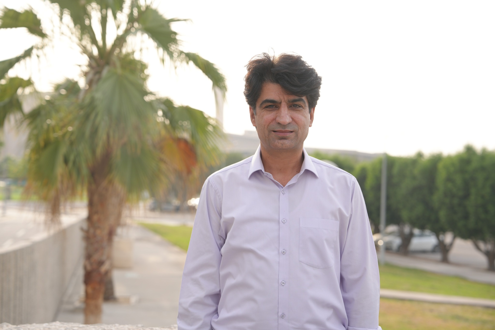

Computing for health, security, and society.
I connect computer science, biomedical AI, and secure digital systems through research, teaching, and academic leadership.

About
From my early studies at Quaid-i-Azam University through my Ph.D. at the University of Vienna and postdoctoral work in Austria, my career has combined research, teaching, and academic leadership. I have served as director of three programs at IMSciences Peshawar and now serve as an Associate Professor at KFUPM.
I am the founder and director of BASMIR Lab. My vision is to connect rigorous computing research with practical needs in healthcare and information security.
Start a research conversationExplore
A closer look at my work.
Browse the lab, scholarship, teaching, and academic service through dedicated pages.
BASMIR Lab
Lab focus, people, projects, and opportunities.
Visit the lab ↗ 02Projects
Funded projects and collaborative work.
View projects ↗ 03Publications
Journal and conference publications.
Browse publications ↗ 04Research Pulse
Daily literature updates and the archive.
Open Research Pulse ↗ 05Experience & Teaching
Academic appointments, teaching, and supervision.
View experience ↗ 06Awards & Advisory
Recognitions, advisory work, and academic service.
View awards ↗Contact
Let’s connect around a research problem.
For research collaboration, graduate supervision, academic exchange, or speaking invitations, contact me at KFUPM.